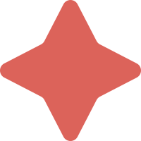

ŠUMAVAN FITNESS
Přijď si dát do těla a ničeho nelituj.
Fitness centrum Šumavan, který se nachází jen kousek od centra Klatov s celkovou rozlohou 700m² je největším fitness zařízením v okruhu 45km.
PO-NE: 6:30-21:30
01
NĚCO MÁLO O NÁS
Naše fitness zahrnuje velký sál pro různé Skupinové lekce, kruhové tréninky, pilates, jógu a jiné fitness Aktivity. Po lekci cvičení můžete zdarma využít i další Služby.
KDE SE NACHÁZÍME
KDE SE NACHÁZÍME
Naše fitness centrum se nachází jen pár kroků od centra Klatov, v unikátních prostorách. Zde si během cvičení můžete užívat jedinečný výhled na celé město i panorama Šumavy.
PROČ ZROVNA ŠUMAVAN
PROČ ZROVNA ŠUMAVAN
Fitness centrum Šumavan kombinuje moderní vybavení, přátelský přístup a komfortní prostředí. Nabízíme vše, co si můžete přát - od nových strojů a pestrých lekcí po individuální podporu trenérů.
Jsme jediné fitko v okolí s takovým zázemím a krásným výhledem na Šumavu. Přijďte a přesvědčte se sami!
VYBAVENÍ
VYBAVENÍ
Naše fitness centrum disponuje širokou škálou moderních strojů značky Technogym, Gymgun, Flamesport.de, které splňují nejnovější standardy kvality a pohodlí. Najdete u nás vybavení pro silový trénink, kardio zónu i funkční cvičení, takže si každý přijde na své. Po tréninku oceníte naše nově vybudované šatny a sprchy, které poskytují čisté, komfortní a prostorné zázemí. Věříme, že kvalitní vybavení a příjemné prostředí jsou klíčem k vašemu spokojenému cvičení.
NAŠE SLUŽBY
NAŠE SLUŽBY
Nabízíme pestrý výběr skupinových lekcí vedených zkušenými trenéry, kteří vás podpoří na cestě za vašimi cíli. Naše přátelská atmosféra a individuální přístup zaručují, že se u nás budete cítit jako doma.
PROSTORY
PROSTORY
Naše fitness centrum o rozloze 700 m² je největší v okruhu 45 km. Nabízíme moderní prostředí, špičkové vybavení a dostatek prostoru pro vaše pohodlí a motivaci k dosažení cílů.
02
NAŠE SLUŽBY
POSILOVNA
POSILOVNA
Moderní fitness centrum vybavené špičkovými stroji, které umožňují efektivní trénink pro začátečníky i pokročilé. Nabízíme prostorné a přátelské prostředí, kde si každý najde svůj ideální způsob cvičení - ať už jde o silový trénink, kardio nebo funkční cvičení. Naše vybavení je navrženo tak, aby podpořilo váš výkon a pomohlo vám dosáhnout vašich cílů bezpečně a efektivně.
KRUHOVÝ TRÉNINK
COREFIT WOMEN
PILATES
03
CENÍK
V našem fitku věříme, že kvalitní fitness služby by měly být dostupné všem. Proto nabízíme férové a transparentní ceny, které odpovídají hodnotě našich služeb.
Vše je bez skrytých poplatků a nepříjemných překvapení – platíte pouze za to, co skutečně dostanete.
Naše cenové plány jsou flexibilní a navrženy tak, aby vyhovovaly různým potřebám a rozpočtům.
"Přijďte se přesvědčit sami a zažijte skvělou atmosféru a profesionální přístup za férovou cenu!"
Petra Helmová
ZÁKLADNÍ
| JEDNORÁZOVÝ | 160,- |
|---|---|
| 10 VSTUPŮ | 1 500,- |
| 1 MĚSÍČNÍ | 1 500,- |
| 1 MĚSÍČNÍ (do 14h) | 1 200,- |
| 3 MĚSÍČNÍ | 4 100,- |
| 6 MĚSÍČNÍ | 7 600,- |
| 12 MĚSÍČNÍ | 13 900,- |
| SKUPINOVÁ LEKCE | 180,- |
|---|---|
| SKUPINOVÁ (10 vstupů) | 1600,- |

Pro vaše pohodlí si můžete půjčit ručník za 30,-. Tento malý poplatek vám umožní soustředit se na váš trénink bez starostí.

04
TRENÉŘI
V našem fitku klademe důraz na profesionální a férový přístup našich trenérů. Každý z našich certifikovaných trenérů se vám bude individuálně věnovat, poskytne odborné rady a podpoří vás na vaší cestě ke zdraví a kondici. Našim cílem je, aby každý klient cítil podporu, respekt a motivaci bez ohledu na svou úroveň fyzické kondice.

PÉŤA
Jednatelka a fitness trenérka, obsluha recepce
Sport a pohyb miluju od dětství a asi si už nedovedu představit život bez něj. Mám ráda všestrannost a proto jsem vyzkoušela několik druhů sportů od běhu, OCR závodů, cyklo závodů jak MTB tak na silničním kole, triatlonu, bodyfitness. Trenérské činnosti se věnuji již více než deset let. Několik let jsem se věnovala kondiční přípravě v mládežnické házené, později i v týmu žen nejvyšší házenkářské ligy ČR.
Nyní se zaměřuji na individuální tréninky dle potřeb klienta, skupinové lekce - kruhové a kondiční tréninky. Snažím se být lidem motivací a ukázat jim, že pohyb nám pomáhá v tom být šťastný a zdravý.
Nikdy není pozdě začít, jen je potřeba chtít.
RADKA
Jednatelka a obsluha recepce
Radka je usměvavá a ochotná jednatelka, která vždy zajistí, že vše v našem fitness centru funguje, jak má. S úsměvem vás přivítá na recepci, poradí vám s výběrem služeb a pomůže s jakýmkoli dotazem. Díky jejím organizačním schopnostem se u nás budete cítit jako doma.
LUKÁŠ
Fyzioterapeut
Lukáš je zkušený fyzioterapeut s dlouholetou praxí, který pomáhá sportovcům udržet tělo v perfektní kondici. Působil jako fyzioterapeut u basketbalové reprezentace ČBF U18 a U20, a od roku 2017 je součástí realizačního týmu hokejové reprezentace ČSLH U17-U20. Od roku 2024 navíc spolupracuje s mládežnickými týmy HC Plzeň.
V našem fitness centru je nejen odborníkem na prevenci a řešení pohybových disbalancí, ale také rádcem a společníkem, který vám pomůže cítit se lépe a bez bolesti. Díky jeho znalostem a zkušenostem máte jistotu, že vaše tělo bude v těch nejlepších rukou.
2007,2012 fyzio ČBF U18, U20
2017-2024 fyzio ČSLH reprezentace U17-U20
2024 spolupráce s mládeží HC Plzeň

VENCA
Trenér tělovýchovy a instruktor pohybu
S řízeným pohybem jsem začal v 7 letech, když jsem přišel na trénink za svou sestrou. Taneční průprava mě provázela dalších 18 let, během nichž jsem dosáhl několika soutěžních úspěchů.
Po období lenosti a operaci páteře, která mi umožnila znovu používat dolní končetiny, jsem se rozhodl studovat zdravotní tělesnou výchovu. Dnes rád předávám své zkušenosti a pomáhám ostatním najít cestu k pohybu a zdraví.

Tel.: 756 663 212

EVA
Fitness trenérka
Mé první kroky k vysněné postavě začaly ve skupinových trénincích a na cyklostezkách, ale časem jsem hledala větší výzvy. Objevila jsem kulturistiku, která mě naprosto pohltila a stala se mým životním stylem.
Fitness pro mě není jen koníček - je to vášeň a každodenní součást života. Absolvovala jsem stovky tréninků a získala mnoho zkušeností, které jsem završila získáním trenérské licence. Ráda vám pomohu dosáhnout vašich cílů a podělím se o své znalosti a nadšení pro tento sport.

JITKA
Fitness trenérka a instruktorka jumpingu
Jsem certifikovaná trenérka s odborností na jumping, fitness a osobní tréninky. Specializuji se na různé typy tréninků, včetně Core tréninku, strečinku, TRX a TRX for Yoga, což mi umožňuje vytvářet pestré a efektivní tréninky na míru.
Zároveň se zajímám o sportovní výživu, která je klíčovou součástí zdravého životního stylu a dosahování tréninkových cílů. Ráda vám pomůžu zlepšit kondici, flexibilitu a sílu, a to vše s důrazem na správnou techniku a individuální přístup.